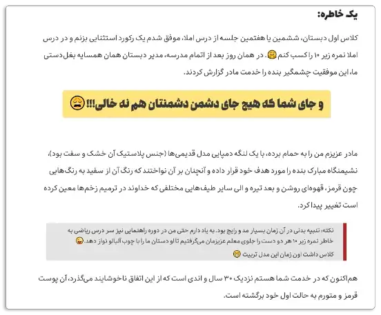

تا الان که این نوشته رو میخوانید مدیوم هنوز امکان راست به چپ رو به پلتفرم اش اضافه نکرده و همین مسئله کار رو برای کاربر فارسی زبان که رسم الخط اش راست به چپه سخت میکنه. ولی از اونجا که این پلتفرم یکی از بهترین و روان ترین پلتفرم ها برای وبلاگ نویسیه حیفه که به این راحتی از خیرش بگذریم. خوشبختانه یک نفر آدم کاربلد اومده وقت گذاشته و فکر کرده و یک راه حل موقت برای این مشکل پیدا کرده. اون راه حل موقت هم اینه که یک افزونه به اسم “استایلیش” به مرورگر اینترنت اضافه کنیم و برای وبسایت مدیوم یک تم مخصوص دانلود کنیم که بهمون اجازه بده که صفحات رو راست به چپ ببینیم و حتی نوشته ها رو بتونیم با یک فونت خوشگل بنویسیم. این هم لینک به مقاله اصلی که اونجا با جزئیات بیشتر همه چیز درباره این افزونه و کارش رو توضیح میده.
اینجا من سعی میکنم براتون به صورت قدم به قدم توضیح بدم که چطوری این افزونه رو به مرورگر اینترنت تون اضافه کنید و تم اش رو نصب کنید. لازم به گفتنه که این افزونه مشکل رو به صورت لوکال حل میکنه، یعنی خواننده متن شما هم باید این افزونه رو به مرورگرش اضافه کنه تا اون هم بتونه متن رو همون جوری ببینه که شما نوشتید.
گام اول: نصب استایلیش
برید و افزونه استایلیش رو از اینجاها دانلود کنید. از اینجا برای مرورگر کروم و از اینجا برای مرورگر فایرفاکس
گام دوم: نصب استایل
سایت خود استایلیش یه عالمه استایل برای صفحات مختلف داره. این استایل ها رو میشه به افزونه استایلیش اضافه کرد. ما دنبال استایلی هستیم که برای مدیوم نوشته شده باشه و بتونه مشکل راست به چپ رو برای ما فارسی زبان ها حل کنه. صالح سوزنچی که نویسنده همون مقاله اوریجینالی هست که لینک اش رو براتون گذاشتم یک استایل برای مدیوم درست کرده به اسم PersianMedium که مشکل راست به چپ رو کامل حل کرده. لینک استایل رو این پایین می گذارم که روش کلیک کنید و استایل رو نصب کنید و به استایلیش اضافه کنید.
لینک استایل را از اینجا دانلود کنید
بعد از این که نصب کردید و استایل رو فعال کردید باید نوشته هاتون شبیه این چیزی که این پایین می گذارم بشه.

حرف آخر
اگه افزونه استایلیش و این استایل PersianMedium رو نصب کنید و باهاش کار کنید شما هم مثل من عاشق اش می شید.
خوب حالا اگه مشکل راست به چپ مدیوم رو برای خودتون حل کردید ازتون میخوام که به بقیه هم بگید که همین کار رو بکنند و این افزونه و این استایل رو نصب کنند. اگه همه این استایل رو روی مرورگرشون داشته باشند اونوقت میشه خیلی راحت از این پلتفرم هم برای نویسندگی فارسی استفاده کرد.
شخصا اعتقاد دارم پلتفرم هایی مثل ویرگول و تلگراف به درد نویسنده های فارسی زبان نمیخوره از اون جهت که عمرشون کوتاهه. تلگراف یک پلتفرم بی نامه و ویرگول هم یک پلتفرم داخلی یه که بعد از یک مدت اگه کاربرهاش زیاد بشه هزینه هاش بالا میره و مسلما بسته میشه. واسه همین هم به نظرم برای درازمدت باید روی مدیوم سرمایه گذاری کرد. گذشته از این بحث ماندگاری، طبق خونده های خودم موتور جستجوی گوگل هم نوشته های روی این پلتفرم رو خیلی سریع ایندکس می کنه که خودش کمک بزرگیه به حفظ نوشته ها و در دسترس شدنش برای عموم.